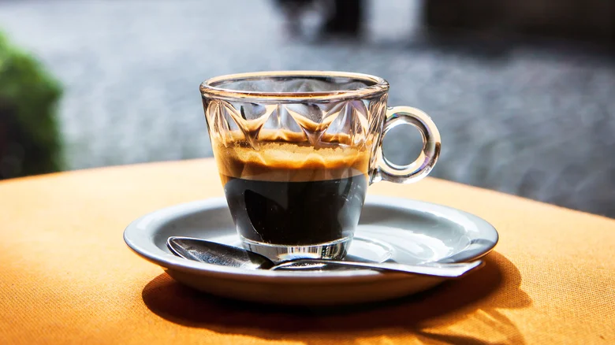
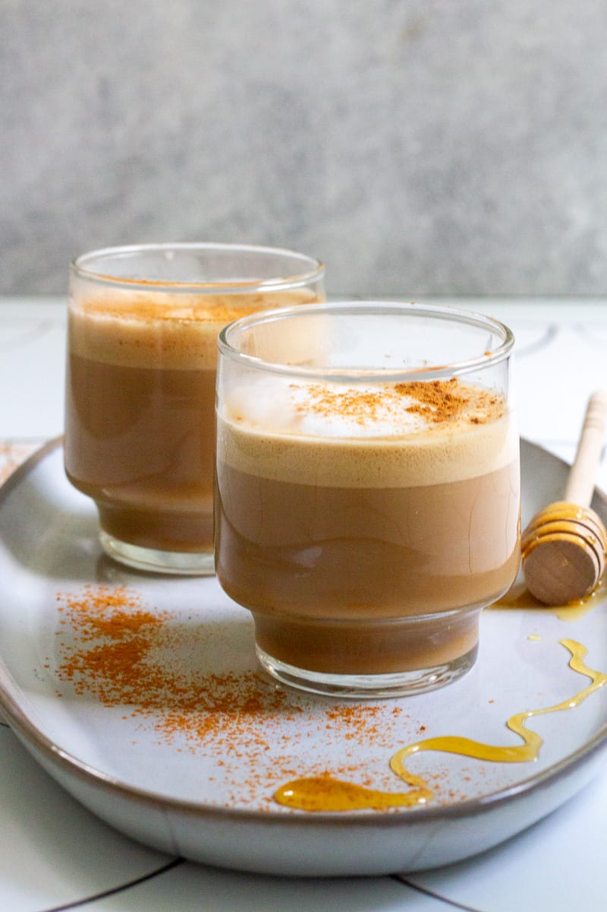
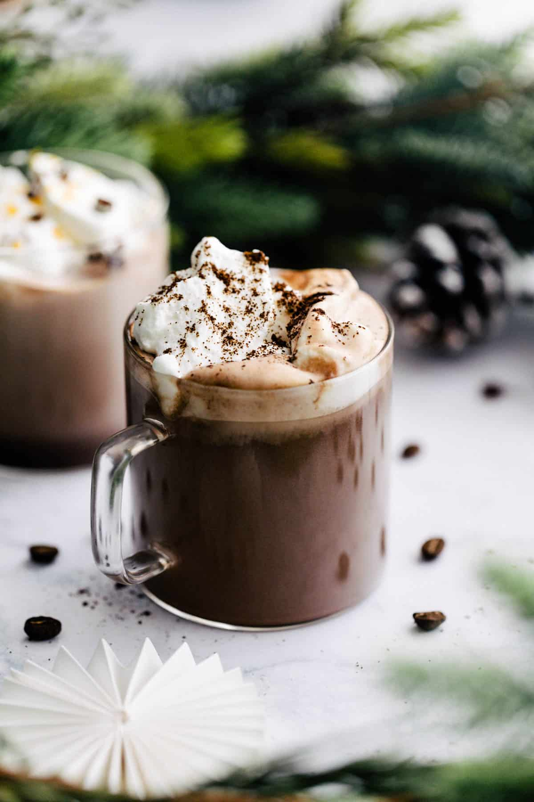
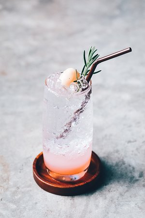
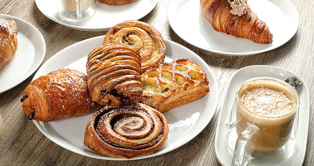
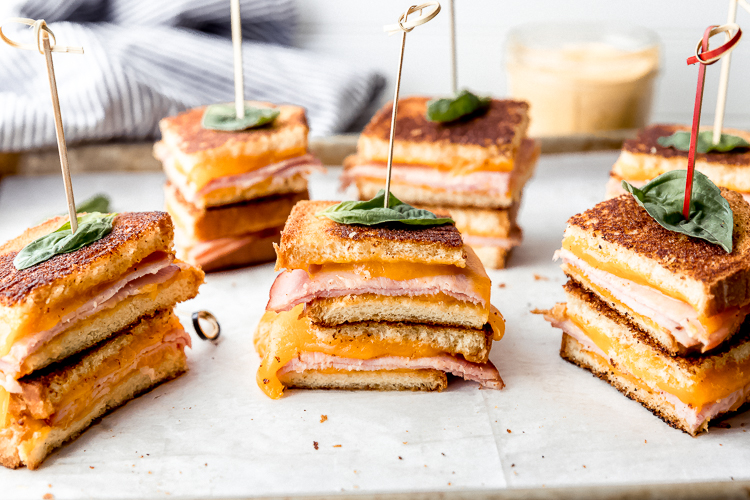
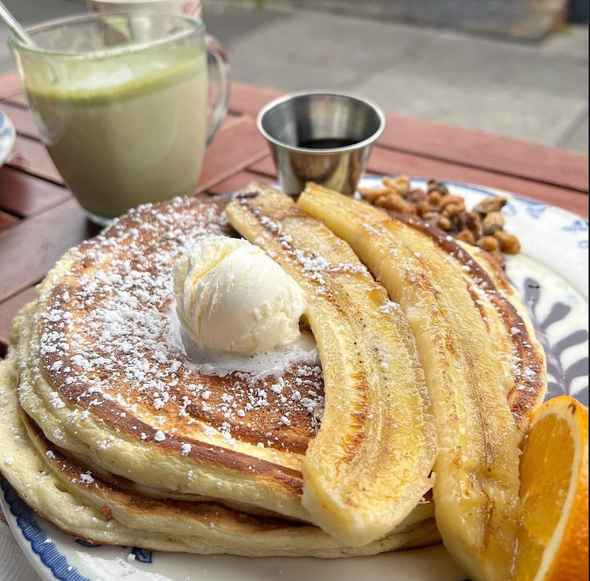

Welcome to CozyCup Café
Discover Your Perfect Brew
Explore MenuOur Menu
Coffee & Expresso
Hot
-

- Espresso – ₱90
- Americano – ₱110
- Cappuccino – ₱140
- Latte – ₱150
- Flat White – ₱155
- Mocha – ₱165
- Caramel Macchiato – ₱175
- Vanilla Latte – ₱165
Iced
- Iced Americano – ₱120
- Iced Latte – ₱160
- Iced Caramel Latte – ₱175
- Iced Mocha – ₱180
- Iced Spanish Latte – ₱185
- Iced White Chocolate – ₱190

Signature Drinks
-

- Brown Sugar Latte – ₱185
- Honey Cinnamon Latte – ₱180
- Sea Salt Caramel Coffee – ₱195
- Hazelnut Mocha – ₱190
Non-Coffee
Chocolate & Milk
-

- Classic Hot Chocolate – ₱140
- Iced Chocolate – ₱155
- Matcha Latte – ₱175
- Strawberry Milk – ₱145
Tea & Refreshers
- Lemon Iced Tea – ₱110
- Peach Iced Tea – ₱120
- Green Tea Latte – ₱160
- Blueberry Yakult – ₱150

Fruit Drinks
-

- Mango Refresher – ₱140
- Lychee Soda – ₱135
- Strawberry Lemonade – ₱145
Pastries & Desserts
-

- Butter Croissant – ₱95
- Chocolate Croissant – ₱110
- Blueberry Muffin – ₱105
- Banana Bread – ₱100
- Cinnamon Roll – ₱115
- Chocolate Chip Cookies – ₱80
- Cheesecake Slice – ₱160
- Brownies – ₱95
Light Meals
-

- Ham & Cheese Sandwich – ₱165
- Chicken Pesto Panini – ₱195
- Tuna Melt – ₱185
- Clubhouse Sandwich – ₱210
- Creamy Carbonara (Small Bowl) – ₱220
- Chicken Alfredo – ₱230
Breakfast Items (All-Day)
-

- All-Day Breakfast Plate – ₱245
- Bacon & Egg Sandwich – ₱170
- Pancakes – ₱160
- Waffles – ₱165
About Us
Discover the story behind CozyCup Café...
CozyCup Café began as a small dream shared by two college friends, Dirk Ydrei Herrera and Mark Rian Fernandez IV, who believed that coffee should feel like home in a cup. Dirk, a passionate coffee enthusiast, spent years experimenting with beans, brewing methods, and homemade recipes in his tiny apartment kitchen. Mark Rian, on the other hand, had a knack for design and business, imagining a space where people could relax, study, and share stories. What started as weekend pop-up coffee stalls in local events slowly grew into a loyal following, with customers lining up for their signature Cozy Latte and warm pastries. When they finally opened CozyCup Café, they designed it to feel like a second home—soft lighting, wooden tables, and handwritten notes from customers decorating the walls. The founders believed every cup should carry a story, so they named each drink after meaningful moments in their journey, like “Midnight Study Brew” and “Best Friends Mocha.” Today, CozyCup Café is known not just for its rich coffee and cozy ambiance, but for being a place where friendships begin, ideas are born, and every visitor feels welcomed like family.
Contact Us
Have questions or feedback? Reach out to us...

Dirk Ydrei Herrera


Mark Rian Fernandez IV